Lecture 18: Introduction to Dijkstra’s Algorithm#
Warmup#
Question 34
Here are some flight options in Washington. The cost of each flight is given as edge weights.

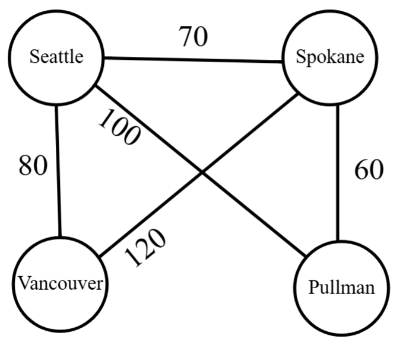
Perform Kruskal’s Algorithm to find a minimum spanning tree.
If you were flying from Pullman to Seattle, would you choose the path on the minimum spanning tree from question 1? Or would you choose the path on the original graph?
Answer
What you should end up with is the following tree:

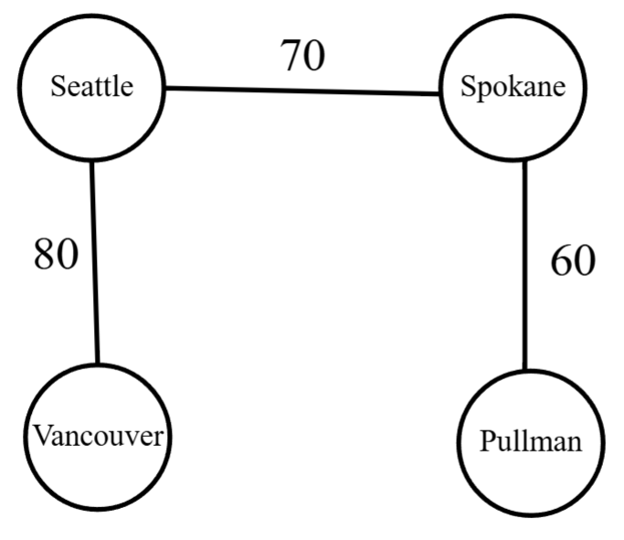
Well, saving money is a good idea! If you took the path on the spanning tree, you would fly from Pullman to Spokane for 60 dollars and then to Seattle for 70 dollars. In total, that would be 130 dollars for the path.
On the contrary, the original graph had a direct flight from Pullman to Seattle for only 100 dollars. This is likely the one you want to pick!
This might seem counterintuitive since we know Kruskal’s Algorithm finds a minimum spanning tree. But, let’s think about it. A minimum spanning tree is a
The question is: how do we find these shortest paths? One answer is the algorithm we will discuss this week.
Dijkstra’s Algo#
Dijkstra’s works how you might try and find shortest paths: “Start at some vertex. Find distances to other vertices. If at any point in time you find a shorter distance to a particular vertex, keep track of that information!”.
Definition 46 (Dijkstra’s Algo)
Input: A connected, simple, positively weighted graph \(G=(V,E)\) and a starting vertex \(s\in V\).
Body: Compute shortest distances from \(s\) in \(G\).
Assign \(s\) distance 0, \(d[s]=0\), and every other vertex \(d[u]=\infty\).
Initialize \(F=V\) and \(D=\{\}=\phi\).
While \(F\neq \phi\):
3a. Let \(x\in F\) be such that \(d[x]\) is minimum.
3b. For \(\{x,y\}\in E\):
\(d[y]=\min\left\{ d[y], d[x]+w(\{x,y\})\right\}\)
3c. Remove \(x\in F\) and add \(\{x,d[x]\}\) to \(D\).
You can try this yourself on the warmup graph. You should end up with the distance from Pullman to Pullman is zero and the rest:

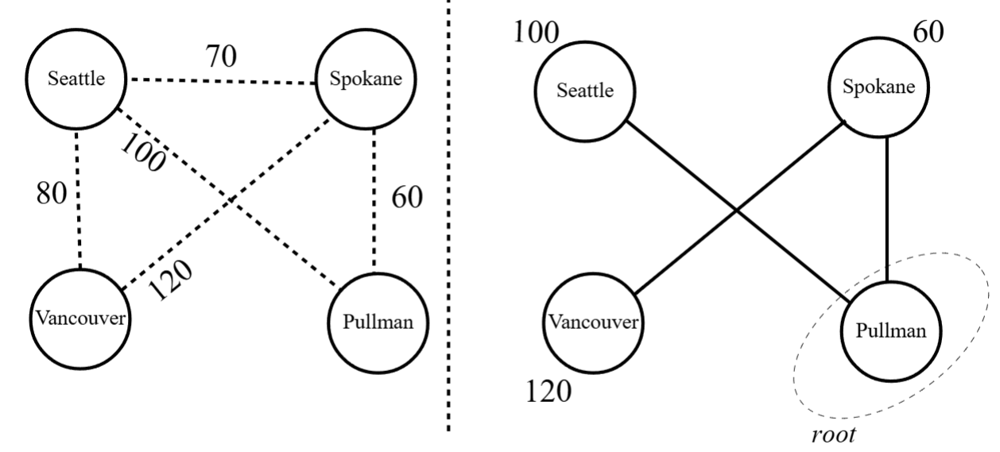
Let’s go through an example together:

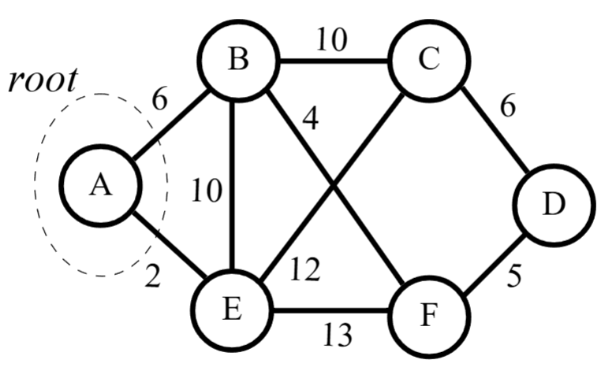
As Step 1 and Step 2 of Dijkstra’s state, we assign the root vertex distance 0 and every other vertex distance infinity. Moreover, \(F\) has all the vertices and \(D\) is the empty set:

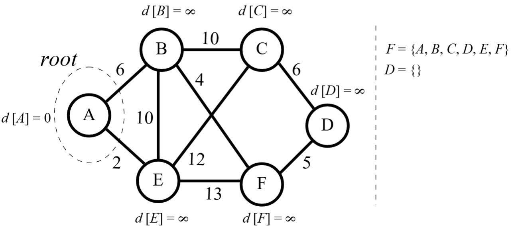
Since \(F\) is non-empty, Step 3a says we pick the vertex from \(F\) with the minimum distance. For now, this is the root vertex \(A\):

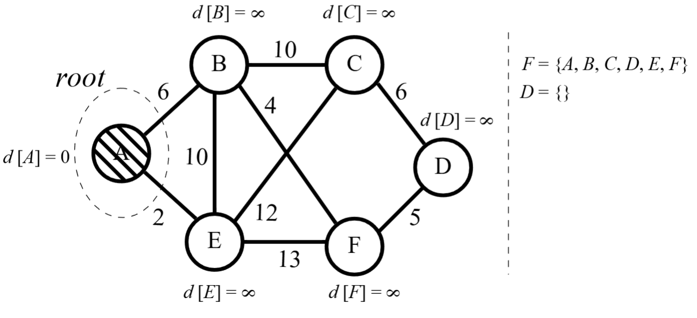
Moving on to Step 3b, we now (potentially) reassign the vertices that share an edge with \(A\). Note that \(d[B]=\infty\) currently. Since \(\min\{d[B], d[A]+w(\{A,B\})\}=\min\{\infty, 0+6\}=6\), we reassign \(B\) to \(d[B]=6\). We also look at the other vertex \(A\) shares an edge with, \(E\). Since \(\min\{d[E], d[A]+w(\{A,E\})\}=\min\{\infty,0+2\}=2\), we reassign \(E\) to \(d[E]=2\).

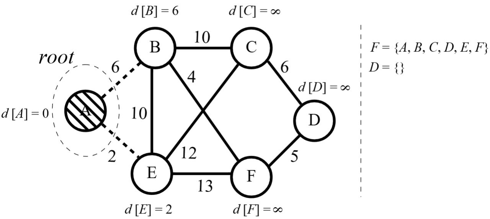
Now, we that we have considered each of the edges of \(A\), Step 3c says we remove \(A\) from \(F\) and add \(\{A,0\}\) to \(D\).

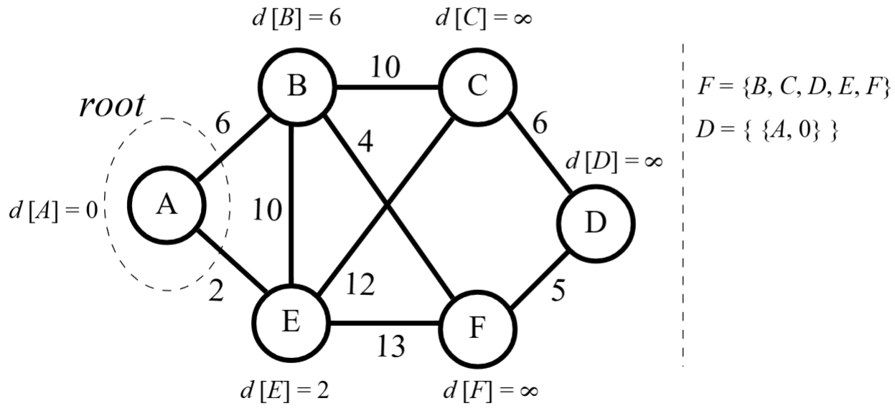
Now, we are done with \(A\). We now look back at \(F\) and find that \(E\) currently has the minimum distance. So, we consider \(E\).

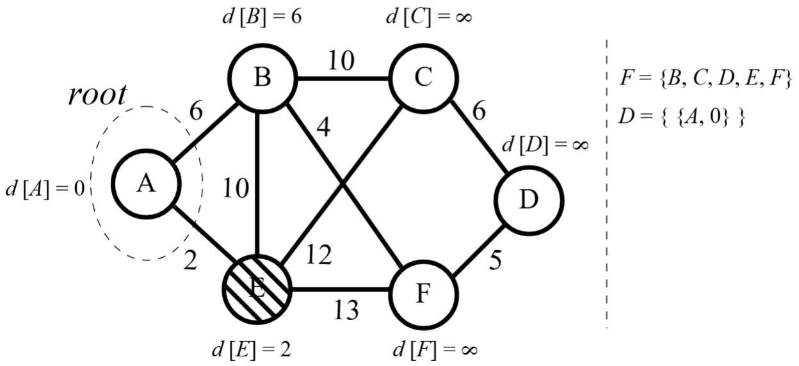
Looking at \(A\), \(d[A]=0<d[E]+w(\{A,E\})=2+2\) so we leave \(d[A]=0\). Looking at \(B\), we see \(d[B]=6<d[E]+w(\{B,E\})=2+10\) so we leave \(d[B]=14\). However, since \(C\) and \(F\) are still distance infinity, we reassign \(d[C]=d[E]+w(\{C,E\})=2+12=14\) and \(d[F]=d[E]+w(\{F,E\})=2+13=15\).

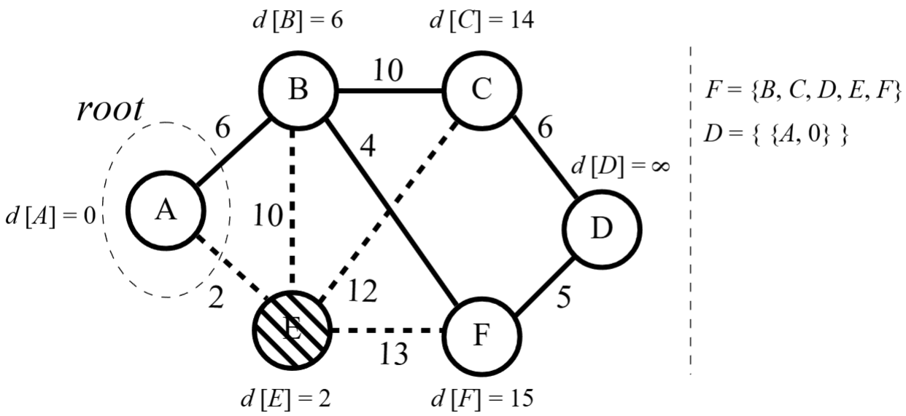
We’ve gone through all the edges of \(E\), so we remove \(E\) from the unconsidered vertex set and add \(\{E,2\}\) to the set \(D\).

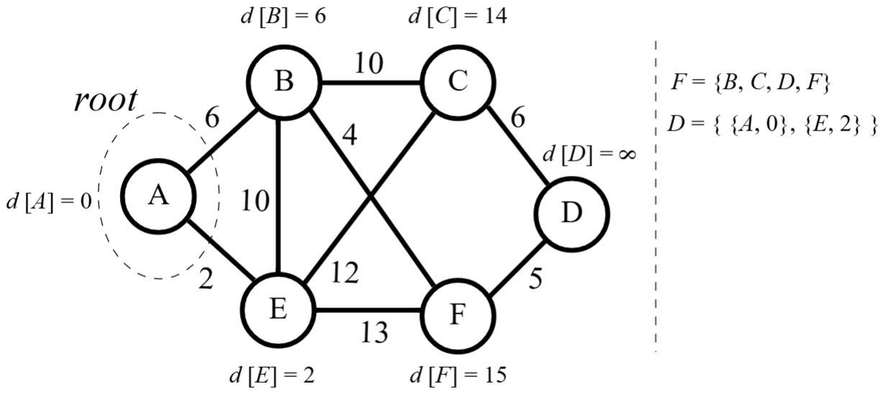
We move on to the next minimum distance vertex, \(B\). The only vertex that gets a shorter distance is \(F\):

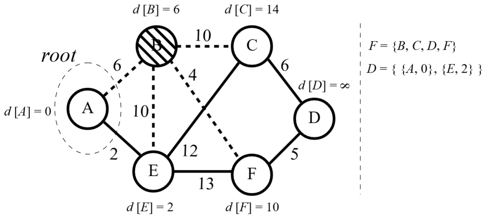
And remove \(B\) from the set to consider:

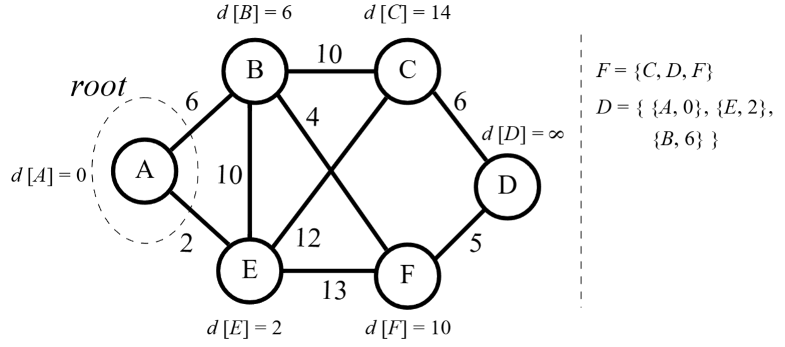
Moving on to the next minimum distance vertex, \(F\). The only vertex that gets a shorter distance is the last infinite distance vertex \(D\):

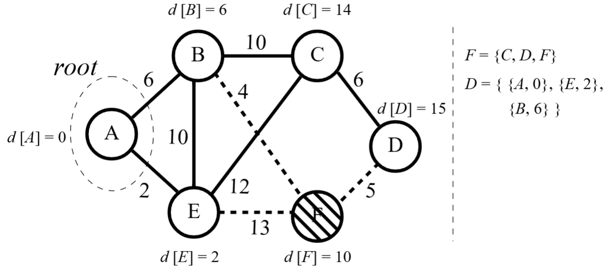
Again, remove the vertex from unconsidered vertex set to considered vertex set:

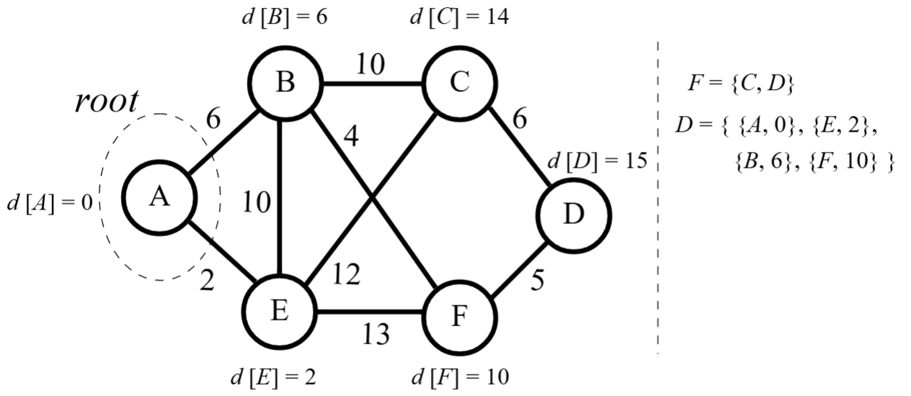
Moving to \(C\):

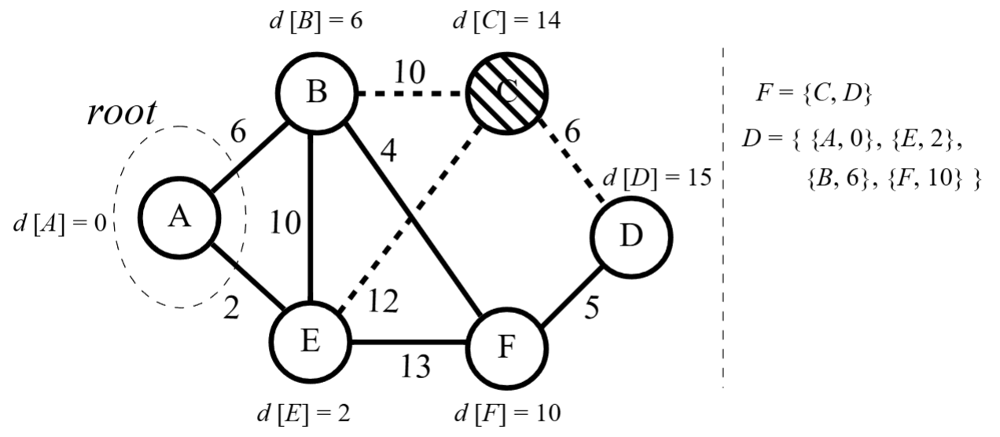
Finishing up \(C\):

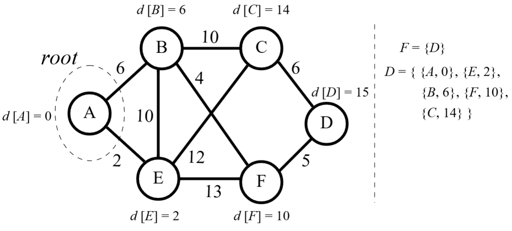
Moving to \(D\):

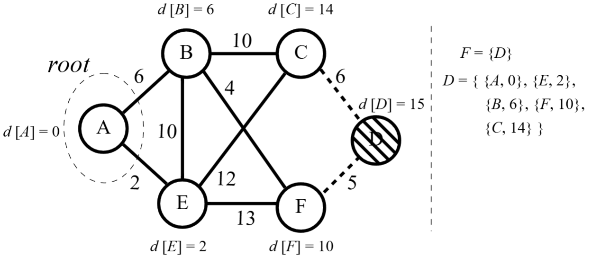
Lastly, finishing the last vertex left:

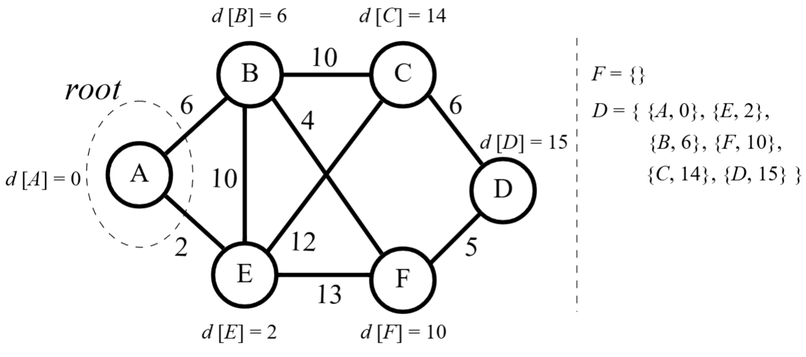